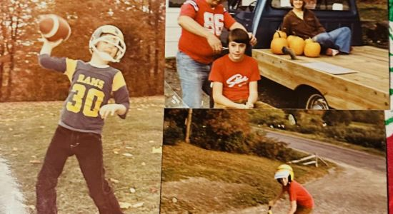
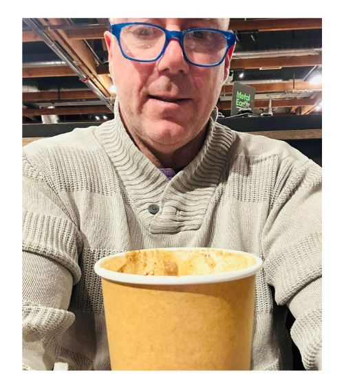

Childhood
I grew up in Utica, New York in the Town of Deerfield right next to the City
- Deerfield Elementary School
- Played sports loved being outside
- Through middle and high school worked for Candellas Farm
From Navy Retirement to Present Day
The owner of Island Curb Grass and Garden is also a Real Estate Broker licensed in Washington State. Curb Appeal adds value to your home and also makes it nice to be at home when you have a beautiful garden and a nice well planned thought garden. It can be complex or simple.
- Life after the Navy
- Rea Estate with HomeSmart One Realty
- Lawncare Helping others